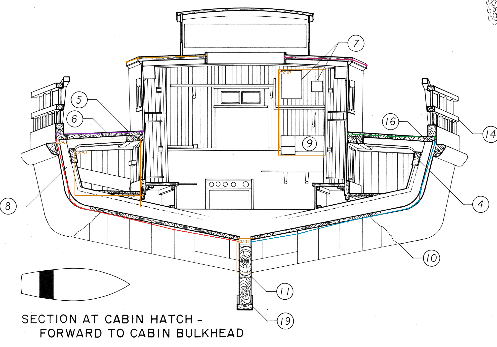

Full native view · Calibrated point/region data · Vector/source overlay · Unreviewed OCR
No conflicting printed scale caption identified.
Trace datum: local Z=0 at bottom of external shoe in the section; not the lines-plan baseline. Positive X is port; this section looks forward. These are open boundary guides, not finished member cutting templates.
Section names/frame numbers identify a view, not its longitudinal location. Lines stations, deck-beam numbers and hull-frame numbers must remain distinct.

The sheet key includes objects seen beyond the cut plane as well as cut members. Preserve the distinction between a projected fitting and a timber actually cut at the section.
| Note | Checked meaning | Dimensions (inches) | Source notes |
|---|---|---|---|
| S07-SURVEY | Fiberglass obscured hull strakes except where ceiling was removed. Winder is a Hettinger Engine Company unit; separate references describe dredge operation. | {} | S07-N01 |
| S07-01 | Ceiling: 1-3/4-inch pine, approximately 9 inches wide plus/minus 1 inch; omitted in bow section to expose frames. | {"thickness": 1.75, "width": 9, "variation_plus_minus": 1} | S07-N02 |
| S07-02 | Ceiling member removed by HAER team for access to frames and outer strakes. This is a survey-access condition, not proof of a permanent missing board. | {} | S07-N02 |
| S07-03 | Centerboard trunk cuts through keel and keelson. Walls constructed of 2 x 11-1/2-inch pine. | {"wall_stock": [2, 11.5]} | S07-N02 |
| S07-04 | Clamp: 5-1/2 x 2-3/4-inch pine. | {"section": [5.5, 2.75]} | S07-N02 |
| S07-05 | Deck mostly fir with pine replacements, 1-3/4-inch thick; usual widths 3-1/2 to 4 inches, some inboard 5 to 7 inches. | {"thickness": 1.75, "width_range": [3.5, 4], "inboard_width_range": [5, 7]} | S07-N02 |
| S07-06 | Deck beams mostly pine, average 5-1/2-inch square plus/minus 1 inch; oak under winders; see sheet 5 schedule. | {"section": [5.5, 5.5], "variation_plus_minus": 1} | S07-N02 |
| S07-07 | Electrical boxes. | {} | S07-N02 |
| S07-08 | Frames: oak, highly irregular sided dimensions. Molded dimension averages 3 inches at keelson. Frames in section 13 are possibly original; compare newer frames on sheet 6. | {"molded_at_keelson_average": 3} | S07-N02 |
| S07-09 | Fuse box. | {} | S07-N03 |
| S07-10 | Hull strakes estimated 2 inches thick; highly irregular widths. Mostly oak below chine with pine replacements, oak chine; examined above-chine members pine. | {"thickness_estimate": 2} | S07-N03 |
| S07-11 | Keel: oak, width 8 inches plus/minus 1 inch; traditionally separate from keelson, probable seam shown below rabbet. | {"width": 8, "variation_plus_minus": 1} | S07-N03 |
| S07-12 | Keelson: oak, average 1 foot 4 inches wide x 10-1/2 inches at garboard; see sheet 5 note 12. | {"section_at_garboard": [16, 10.5]} | S07-N03 |
| S07-13 | Limber holes. | {} | S07-N03 |
| S07-14 | Rails: 3-1/2 x 1-3/4-inch oak on iron stanchions. | {"section": [3.5, 1.75]} | S07-N03 |
| S07-15 | Roller bars. | {} | S07-N03 |
| S07-16 | Waterway: oak. | {} | S07-N03 |
| S07-17 | Winder brake controls dredge payout; outboard position pulls iron strap around forward wheel. | {} | S07-N03 |
| S07-18 | Winder clutch hauls dredge; outboard position shifts cable barrel backward into gear. Releasing handle lets bottom weight pull winders out of gear. | {} | S07-N03 |
| S07-19 | Worm shoe traditionally pine, average 3 x 8 inches plus/minus 1 inch; maximum width at centerboard 10 inches. | {"section": [3, 8], "variation_plus_minus": 1, "max_width_at_centerboard": 10} | S07-N03 |